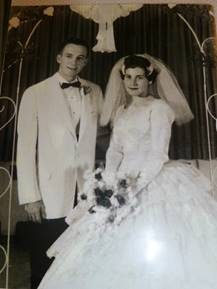
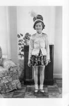
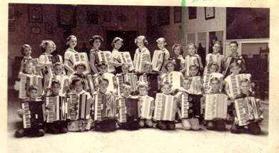
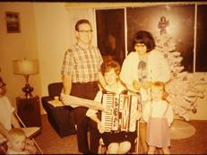
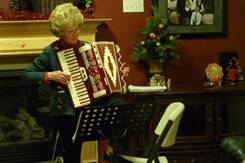
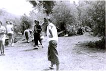
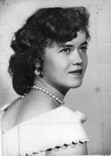
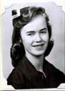

Chapter 2 - YOUTH
I enjoyed my Junior High and High School days. Eleanor Ewing moved into our ward during our 7th grade. Pat & I were best friends, but Eleanor and I became good friends also. We had another friend, Patsy Morris, who lived close to Eleanor. She wasn't a member of the church either. She had nice parents. I grew up with Patsy, and she and I used to play together in grade school, however, she was moody quite a bit of the time and I didn't enjoy that. When we were in the 9th grade, Pat and her parents moved to Syracuse. I felt really bad, but her and I still did a lot together and would stay the weekends with each other sometimes (or at least Friday nights. I'd usually go home the next morning if I stayed at her house). I remember one-time Pat & I were eating breakfast with her parents and got the giggles. Her mother told us to stop, but we couldn't. She said if we couldn't stop laughing, we should leave the table – we couldn’t stop so we did leave the table.
Eleanor & Patsy had become good friends, but they took me in, after Pat moved and we became a threesome. We had our main group of friends – Joanne Hill, Margie Martin, Corrine Larsen (they lived in the Sunset 1st ward, but we had grown up together and did a lot together) then Eleanor, Patsy, Pat, Bonnie, Connie & myself. Connie & Bonnie were really cute, had plenty of money so had the latest fashions in clothes and were very popular. We didn't do as much with them (as they thought they were too good for us) Bonnie was a cheerleader and she was voted the queen of several of the school dances. She always gave me a hard time. She teased me about being "Preacher Porter" and would say in Sunday School or MIA "let Preacher Porter say the prayer". She always tried to make me look foolish in one way or another. If we were in a group and I tried to add to the conversation, she would try to belittle me. I've often wondered why. Some have said that she was jealous of me, but why would she be jealous? She had everything going for her. She did a couple of terrible things to me that I had a hard time forgiving her for, but think I have now. However, I can still vividly remember them.
One incident happened while I was working part-time at the Arctic Circle in Roy. During this time, Bonnie played up to me to get information about Geneal who was Bonnie's boyfriend's EX girlfriend. I didn't tell Bonnie anything bad about Genial as there wasn't anything bad to say about her. She was a neat girl and I really liked her. Bonnie came to the Arctic Circle one day when I wasn't there and told the other girls that I was spying for her and telling her everything I could about Genial. The other girls really shunned me and were upset with me until I found out the cause of it. I finally convinced them that I hadn't said anything bad and that I was Genial’s friend. I was really upset with Bonnie, but I tried to forgive her.
Soon after Ken and I were married, Bonnie came to me and said what a wonderful reception we had, and that since her and David Jacobs were getting married soon, could I help her? I told her where we got our invitations, napkins, decorations, etc., and that I had rented my wedding dress and where I rented it. She said she thought that was a good idea to rent it as you only use it once. She looked at our picture and saw my wedding dress again and said that it was beautiful, but that she wouldn't rent my dress if she decided to rent a wedding dress. She later told me that she had rented a dress, but that it was not the one I had rented, and she thanked me for my help. She asked me and my friends to serve at her reception. I had to go early, so I went with Eleanor and her mother. What should I find when I got there? - Everything was the same as mine, only much more elaborate. She used the same colors - blue and pink, the same napkin idea, same decorations, only like I said - more elaborate. She held it in the stake house instead of our chapel where I did. Then when I went through the line, I was so stunned to find she was wearing my wedding dress that I could hardly speak to her. Eleanor's mother told me, when we were talking afterwards, that I should be flattered that Bonnie thought I had such good taste that she wanted to copy me. I wouldn't have been so upset except that Bonnie had told me she didn't rent my dress. And I knew that behind all this she mainly wanted to outdo me. She had always tried to do this, and usually she succeeded because my family didn't have as much money as hers because her mother worked, and mine didn't. I was glad that my mother didn't work, however, and that when I came home from school, she was there, and many times I would walk into the house and smell fresh homemade bread. Maybe that was the reason she was jealous of me.
 It took me awhile to forgive her of this, but what the heck, I'm happy with my life and my family and so I hope she is with hers.
I saw her and her husband in the Celestial room at the Ogden Temple in Feb. of 1998, we hugged and had a good visit. Her and David have strong testimonies and have raised a wonderful family, so that’s great.
My parents wanted their children to have opportunities for music and dance so I took tap dancing lessons from Mr. & Mrs. Albright for three years - 2nd to 5th grades. My friends, Margie Martin and Bonnie Draper took them with me. Also, a boy from South Weber, Paul Thorpe took lessons with us. We had fun being in recitals and performing in the ward, etc.
My Accordion
When I was twelve, my parents let me take accordion lessons which I took for four years. Mom & Dad had bought the accordion for Hal, but he didn't want to practice and didn't like it so they gave it to me. Later on,Hal they bought me a new one. I loved the new one, it was red and white. I still have it. As I mentioned earlier, Pat was able to take accordion lessons with me plus two of our other friends, Margie and Joanne. Mr. Berry, our teacher, came out to Sunset and taught us in the church for awhile, then he got a studio in Ogden and we went there. Soon he had enough students that we formed an accordion band and met one day a week for lessons and another day for the band lessons. We met a lot of neat kids and flirted with the cute boys. For the 24th of July celebration one year, Mr. Berry had a float built and we all got to ride on it and play our accordions. Afterwards we played at the city park where there was also other entertainment and concessions. My friends and I played in ward and MIA activities. One time Pat and I played a duet at a ward activity. That was fun, however, another time I was asked to play a solo at a Ward Christmas party. That was not fun. When I had my friends, I was confident and was able to do fine, but all by myself, that was another story and I was really nervous so my fingers went cold and I did awful.
After Ken & I were married, he had me play my accordion at least once a year for our family Christmas parties. I usually played "Frosty the Snowman" and had the family sing with me.
When we were living in Clearfield, the ward had a talent show, had heard that I played and asked me to be in it. I decided to play "Washington Post March". I practiced a lot, memorized it and got so I could play it really well. However, the night of the performance, I got scared again, my fingers went cold (which isn't good when you have to play a song that is a fast tempo) I made a lot of mistakes and felt awful, but I received compliments anyway. In fact, a young man in our ward, who had just come home from his mission and was starting up a band approached me and asked if I would join his band. I was really honored because he was a very talented young man. He told me who the others were in the band, and they were great also. I told him I would think about it because we would be moving to Arizona shortly. I later called and declined saying that since Ken was already working in Arizona and just flying home for weekends and I had young children, it would be difficult to get away for the practices and I would be busy packing. I also felt it wouldn't be fair to him for me to just be in for such a short time. He said he was disappointed, but would honor my wishes. I have later regretted not taking the opportunity to do this. It might have made a great difference in my life. I might have gotten more confidence and kept up with my accordion. It would have been great for the family for family home evenings, camping, etc., to sing when I accompanied them on the accordion. I really missed out and mainly it was because of fear. Fear is of the devil. He doesn't want us to progress. I hope my family will learn from my mistake - to take advantage of opportunities.
 I did take advantages of a few other opportunities to play my accordion. Somehow the word usually leaked out in wards where we lived, that I could play. I was asked to play at a High Priest party and a Relief Society Birthday Party while living in Erda. A few months later, another woman moved into our ward who was very talented on the piano and accordion. Her name was Susan Derricott. Susan and I were asked to play an accordion duet at a ward Christmas party. That was fun because, here again, I had someone with me - not a solo. She was so good that it was fun performing with her. She played the hard part and I played the melody. We received lots of compliments. Sandi, Shellie, Mike & David took piano lessons from her for a while; they later took from a lady at Stansberry Park. Susan was good, but they didn't like going there because her house was such a mess and her children unruly. She was great at music, gardening, etc., and that was where she spent her time. They liked the lady at Stansberry Park better because her home & children were orderly. This picture is when our family asked me to play my accordion at our family Christmas party. This year it was held at David & Shauna’s beautiful home in Enterprise, Morgan County, Utah. I can’t remember the year.
I asked Georgia & Rick to bring down my accordion, when they came to visit us in Wasco, California, when we were serving our 2nd mission there. I practiced and played for the residents at the assisted living center where I volunteered and also at the elementary school where I volunteered to help in a third-grade class.
Back to my youth. When I was a sophomore in High School, I was tired of practicing my accordion and wanted to quit taking lessons. Mom was expecting Kim and her varicose veins were so bad that she had to stay off her feet as much as possible. I persuaded Mom and my accordion teacher, Mr. Berry, that I needed to help out more with the home and children and therefore, would need to quit as I wouldn't have time to practice. Mr. Berry was disappointed and told me to not put it up for good, but to keep playing. I didn't heed his advice very well though.
I started dating when I was in the 8th grade. (The church hadn't come up with the standards of dating - no dating until age 16 - at that time) I went to the "Night Dance" that year with Harry Campbell and thought I was on top of the world as he was one of the most popular boys. I was elated when he asked me. However, I came down sick with the flu that morning. I made myself go to school because I knew my parents wouldn't allow me to go to the dance if I was sick. I also was afraid that Harry would wonder why I wasn't at school - so I had to go. I was still so sick when he came to get me, but I wouldn't let on to anyone. We double dated with Harry’s friend, Jay Barlow & his date. Jay’s dad drove us. I didn't have a very good time because when we went out to eat, I didn't feel like eating. I wasn't a very good dancer or conservationist because I was too sick so neither of us had a very good time. I should have stayed home where I belonged, but another reason I didn't was because I didn’t want him to have to stay home too and it was too late for him to ask anyone else.
In the Ninth grade I went with Burt Weaver. We were voted to be King and Queen of the "Night Dance" in most of the home rooms, but then they decided to put the names in a hat and draw one out, and it wasn't us. Burt and I had a lot of fun going together. A few months later our ward was having a dance. Most of my girlfriends said they were going, but when I got there only one of my friends were there. But there were lots of boys, even some from Clinton. They started asking me to dance. Soon they were cutting in on each other, and I was having a great time. Burt also came to the dance, but every time he asked me to dance, the other boys would cut in on him. Finally, he got mad and went home. When it was almost time for the dance to end, one of the boys, named Veldon Baird, tried to persuade me to let him take me home and go out the back way so the other boys wouldn't see us go. I asked him why, and he said that something was going to happen, and I'd better decide quickly. I didn't know what to do, but I wasn't too worried because they were all good guys and I trusted them, so I decided to stay and see what would happen. During the last dance, they all kept cutting in so fast that we hardly had time to dance a step or two before the next one would cut in. Finally, it was over, and they said they would all walk me home. When we got to the door, the one boy who was the last to dance with me (Jimmy Petersen) grabbed me and kissed me. They had decided that the last one dancing with me, when the dance ended, got to kiss me. They would all walk me home, but he would kiss me. Guess they forgot one thing - to ask me. On well, it wasn't so bad.
At North Davis Jr. High, we had dances in the gym before school, during lunch break and after school. They played records. One of my favorites was "Sincerely". Most of the kids attended these dances. Those who were going together or going "steady" went right out on the floor and danced every dance together. Margie Martin was going steady with Gary Nelson (who she later married) and Bonnie Draper was going steady with Ronny Pauling. Boy that was way too young to go steady. I think we had these dances at Davis High also. I can't remember for sure. Anyway, the rest of the boys were on one side of the gym and the girls were on the other side. A boy my age, Gary Youngberg, liked me and would always come over to ask me to dance. Many times, I did dance with him. He was a good kid, but he danced so funny that I was embarrassed and didn't like to dance with him. Many times, when I would see him coming over, I would hide or talk my friends into walking the halls with me. I did like to go to the dances, however, to dance with other guys.
Elvis Presley became popular about this time. The first song I remember was “Don’t Be Cruel”. Wow! I loved that song. I still love it. I bought the record and Pat and I would listen to it over and over. I loved a lot of the other songs Elvis sang, but especially “Don’t Be Cruel”.
Hal and Religion: When Hal and I were in our teens, one day he asked me why I didn’t open my mind to other religions, why I believed everything our parents taught us. He told me that I should go to other churches and investigate them. Hal didn’t like going to church. He was expected to by our parents, but he didn’t want to go, so he never studied the scriptures or rarely prayed – so he never gained a testimony of the gospel. I said to him “Why would I want to do that? I know for sure that this is the true church, I have had my prayers answered and have felt the spirit of the Holy Ghost testifying to me that it is the true church.”
Pat, myself & the Savior
When I was about 14, my best friend, Pat Kleitches and I were babysitting for a family in the ward. They had asked me to tend their children and I asked if Pat could come along. Pat’s parents weren’t members of our church, so, of course, she wasn’t either. They were antagonistic to the church and forbid Pat to join. They had allowed her to go to church with me. She had always gone to Sunday School, Primary, M.I.A. and sometimes Sacrament Meeting with me. They had moved from Pennsylvania to Sunset, Utah when Pat was seven years old. She lived on the highway about 4 houses away from me. We had become best friends. Pat and I had discussions about the church many times. On this particular night, after the children were asleep, Pat and I began discussing the church again. I bore my testimony to her and we began to feel the spirit of the Lord. All of a sudden, I looked over at the big chair which was to my left. It was aglow. There was a beautiful brightness and in the middle of it was Jesus Christ - or an angel. I’m not sure which, although we felt it was Christ. I was so filled with the love of this being that I immediately began to cry. Pat began crying almost at the same time. When I looked again, he was gone. We cried and cried for a long time. When we at last gained composure, she said, “Mae, did you see Christ?” I nodded yes, and we hugged each other. She had seen him the exact same time I had, but he didn’t stay long, just long enough for us to see him sitting in that chair and to feel his presence. It was such a beautiful experience and I know it helped to instill the desire in Pat’s heart to join the church. Her parents wouldn’t let her join while she was in their home.
**I had e-mailed Pat the experience entitled “Pat, Me and the Savior” to ask if I had recorded it corrected & to make any changes if she remembered it differently. This was her reply.
On Sat, Nov 28, 2009 at 11:56 AM, <bradpat123@aol.com> wrote:
Dear Mae,
You certainly have a wonderful gift to be able to correctly write this experience we had. I cannot ever deny or forget that special time in our life.
Love, Pat
Thanks, I can't ever deny or forget it either. We were so blessed to have that experience.
Love,
Mae
Girls Camp
The summer between my Freshman and Sophomore years, I went to MIA camp up at Bear Lake. We had lots of fun and I met three boys with whom I wrote to for about a year. Especially John & Glen. They were quite the characters. They wrote mushy love letters. At camp, my friends and I were the oldest, so the leaders were lenient with us. We sunbathed on the beach. That’s where we met these boys. There was also an inside swimming pool right by the park where we camped. That’s where I first experienced kissing underwater. Glen had talked me into kissing him underwater and when we came up, the younger girls were up on the balcony, had watched us and were laughing. (Not sure why I didn't get in trouble with the leaders. Guess the girls didn’t tell on me.)
I always loved camp and went every year. Our stake had purchased some land but were developing it and building a lodge, so we went other places until they had it finished. The first year we went to the Meadows in the canyon up east of Huntsville, the second year we went to Lava Hot Springs and stayed in cabins by the river. We had lots of fun swimming in the pools, soaking in the hot tubs, eating good food, etc. The next year we went to Bear Lake and the last year we did go to our stake camp. I remember helping to take the younger girls on a "snipe hunt" that year. It was fun. We had them take their flashlights, we took them out in the woods, gave them a paper sack and told them to call "here snippy, here snippy" and snipes would run into their bag. I'm not sure they knew what a snipe was (no such thing) or that we told them anything about them. One Beehive girl came back crying and showed us a hole in her paper sack. She said one had run in, but had escaped.
I guess because of my love for girl’s camp, I was involved in the camping program in several of the stakes where we lived after I was married. But one thing for sure, we had stricter rules when I was a leader, than when I was a girl. I guess I realized, from my experience, that boys shouldn't be allowed in camp. I hadn’t done anything really bad, but kissing boys you hardly know, isn't too appropriate. I'm sure my mother wouldn't have approved. I don't think I was "boy-crazy" as some of the girls seemed to be, but I did enjoy the attention that some of the boys gave me.
These older teenage years can be full of fun, they can be hard, and they can be dangerous. I wanted to have lots of fun and I did. I think, for the most part, I was a good girl - obedient & respectful to my parents & others. I always knew I wanted to be married in the temple, but looking back I don't think I was as careful as I should have been. I didn't "make-out" with boys (well, maybe a couple of times), but I enjoyed the "good-night kisses & hugs". I can see the wisdom the Prophets had in giving the council “not to date until age 16". That council didn’t come out until after I was married. The world is getting more and more immoral and the temptations are getting greater because Satan is making a great thrust before the second coming of the Lord, Jesus Christ, and so the leaders of the Church are giving more council to keep us on the right path, if we will just heed their council. Some of this council is: not dating until age 16, not watching “R” rated movies, dressing modestly, etc. If we will follow the prophet, we will be safe from Satan’s grasp.
I'd like to insert a couple of paragraphs including a small example Elder Marlin K. Jensen of the Seventy gave in a talk entitled "A Union of Love and Understanding".
“A very natural and wonderful consequence of becoming a person capable of great love is described in this passage: "For intelligence cleaveth unto intelligence; wisdom receiveth wisdom; truth embraceth truth; virtue loveth virtue; light cleaveth unto light: (D&C 88:40) If we pursue the goal of an eternal marriage with purity and with both our hearts and our minds, I believe in most cases we will eventually be rewarded with a companion who is at least our spiritual equal and who will cleave unto intelligence and light as we do, who will receive wisdom as we receive it, who will embrace truth as we embrace it, and who will love virtue as we love it. To spend the eternities with a companion who shares the most important fundamental values with us and who will discuss them, live them, and join in teaching them to children is among the most soul-satisfying experiences of true romantic love. To know that there will be someone who walks a parallel path of goodness and growth with us and yearns for the same eternal values and happiness is of great comfort.
I witnessed a powerful example of this principle recently as I sealed a young couple in the Salt Lake Temple. After I had performed the sealing ceremony and the couple had exchanged rings and embraces, I asked them to share their feelings about each other and the Lord. The new bride spoke first. Her brief remarks expressed both gratitude and emotion as she told how from her very youngest years she had desired to keep herself virtuous and had hoped to find a companion who shared her values and righteous aspirations. She confirmed the goodness of her new husband by witnessing that he was all she had hoped for and more. Then the young husband spoke. He, too, was tearful as he shared how at age fourteen he had begun to pray to the Lord that the wife of his future, whoever she might be, would be protected and would keep herself virtuous while preparing for an eternal marriage. He also told how he had committed himself again and again over the years to that same path. Then he expressed his great joy at having met this wife of his prayers, and he mentioned his high hopes for a truly exceptional marriage.
This is the kind of relationship that our Heavenly Father wishes for all of his children. None of his faithful children will miss out on the opportunity for eternal marriage with one who is equally prepared for eternal life. Virtue loveth virtue! Truth embraceth truth!”
I will insert here that this is what I hope and pray for - for all our children, grandchildren, great grandchildren, etc. Ken and I do have this kind of relationship and it is so wonderful and brings us so much joy and happiness. It isn't a perfect marriage, we still occasionally get upset with each other, but not for long. We forgive each other and try harder. We pray continually that we will endure to the end and be able to have each other for eternity.
Well, back to my youth - I dated quite a bit in High School. I dated some boys from my high school and some from Ben Lomond High. Dennis Ewing had moved out to Sunset and his friends came out to visit him. Me and my friends met them and started dating them. We double dated most of the time and had lots of fun. We went to dances, movies, or just went for a ride and got a cheese burger, fries and shake. We also went to our homes and learned new dance steps together or played games.
This is how we met the boys from Ben Lomond High: When I got back from camp at Bear Lake, we met four boys from Ben Lomond High who were riding around in a red convertible. Actually, we saw them come into Sacrament Meeting and sit in the back. Remember, I said we sat with friends, rather than families in those days. I usually walked my friends partway home after the meeting and then they would walk me partway back - so we could talk and be together. This afternoon, these boys rode past us, honked and waved. We waved back so they turned around, came back, stopped and asked if we would like to go for a ride. There were several of us, but we piled in. We weren't worried about being kidnapped, etc., like we would be in today's world. I'm not sure how we all fit in, we were like sardines, but it was fun. After awhile we told them we needed to get home or our parents would be worried. Since we were down west of town, they started dropping off my friends who lived the farthest down. They dropped off Bonnie & Connie, then Margie & Joanne, then the next one to be dropped off was Eleanor and then I would be left alone in the car with those four boys. When I realized it, I whispered to Eleanor my fear. She said for me to get out with her and we would pretend we were sisters. We did, they acted surprised, but didn't say much. I went in her house and after awhile she said she would walk me part-way home. As we were walking, they drove by, stopped and asked what we were doing. I had to confess that she was walking me home as I was nervous about being in the car alone with them since I didn't really know them. They laughed and said they knew we were not sisters. We talked for awhile longer and Dallas Hemsley (the owner of the car) asked if I would help him wash his car on Saturday if we did it at my home, so he could get to know me better. Dennis Ewing had recently moved to Sunset, and these were his friends from Ogden, when he used to live. Dennis and his friends were all seniors at Ben Lomond High. Dennis had told these friends to come out and go to Sacrament Meeting with him and maybe they could meet some cute girls. When they saw us in Sacrament Meeting, Dallas had told the others "I get the sunburned girl in the white dress". That was me. (The white dress is the one I wore when I had my picture taken at age 16.) Anyway, I consented to help Dallas wash his car, but on Saturday morning I forgot and was sleeping in when Dad came in to wake me and tell me that a boy was waiting for me in the front room. Dad said the boy told him that I had agreed to help him wash his red convertible. I quickly dressed and went into the front room and found him reading a "Parents magazine” which dad had given him to read while he waited for me. I had to laugh at that. We had fun washing his car. I found out that Dallas was active in the church and we started going together
Sometime later, Dallas traded in his convertible for an Oldsmobile. It had leaded pipes, etc., - really a neat car. He hung fur dice (trademark of the 50's) from the rearview mirror. You could always hear when Dallas was around because of the leaded pipes on his car. Since Dallas & I were going together, and Eleanor started dating Dennis, we double dated a lot. Vern Barker and Bob Mansfield dated different girls from Sunset off and on - so we had a fun time together. At onetime, Vern was dating Carol Fisher. She was a year younger than me. We had lots of fun going to dances, drive-in movies, bowling or parties at each other's homes. Many time we would just go to get something to eat - hamburgers, fries, malts or Cherry Cokes (Cherry Root beers when I dated Dallas because he wouldn't buy me a coke) at the Arctic Circle or A & W Root beer, and go for a ride.
Between my sophomore and senior years, I went with Dallas, Vern and Bob off and on along with Ted Fifield and other boys from Davis. Dallas was getting serious and talking about marriage and how we would bronze our first child's shoes, and I certainly wasn't ready for marriage at that time of my life - so I lost interest in him and started treating him indifferently. Bob made the statement to Eleanor that no girl would treat him like that and get away with it. Later I started going with him, and soon he also was getting serious. It turned me off and I started treating him the way I had Dallas. He wouldn't break up with me. He was starting to call my parents, "Mom" and "Dad". Mom just laughed, but it really upset Dad. He was afraid that I would marry Bob and he didn't want that. Bob was an only child and really spoiled, and he wasn't very active in the church. Bob joined the Air force and wrote to me and sent me a beautiful 8x10 picture of him in uniform. He signed on it "All my Love, Reny" (His nickname was Reny). I sat it on my dresser, and every time dad came into my room he would put it in my drawer. I laughed about it. I wasn't worried about getting married, but poor dad was. Later, however, I received a letter from Reny telling me that he was getting me an engagement ring, and would bring it to me on his leave. I was surprised and wrote back telling him I wasn't ready to get married. I was only a Junior in High School. When he came home on leave, he was upset that I wouldn't accept his ring, and we had a long talk. He reached in his glove compartment and took out a pack of cigarettes and started smoking. Wow! I was glad I broke up with him. He wrote later telling me that he had met a nice girl in California and that they were going to get married. He said he would never forget me, but that he wanted to get married now. I was relieved.
Vern was the boy I liked best. He was really handsome, a neat dancer and fun to be with. When we would go to dances, Vern would swing me under his legs, side to side, up high, etc. It was lots of fun. One night, soon after we started going together and I had just broke up with Reny the first time, we stopped at a drive-in. Reny was driving by and saw us, drove in by us, got out and started arguing with Vern that he was stealing his girl and they started fighting. (Oh brother, but I was scared.)
Vern was a lady’s man. My mother knew his dad and said his dad was the same way and she was worried that if I got serious with him and ended up marrying him, he probably would be unfaithful. While he was going with me, he was going with two other girls in Ogden.
One time when I was on a date with Vern and we double dated with Eleanor & Dennis, they stopped at a drive-in in Ogden and bought us all hamburgers and really large drinks. Then we went riding around out in the Plain City area. We got a flat tire and while Vern & Dennis went to a house to borrow a jack to fix the tire, Eleanor & I had to go to the bathroom so bad from drinking so much pop, that we stepped outside the car and as it was dark and out in the country, we proceeded to quickly squat there by the car. It was during the winter - so was really cold. When the guys came back, one of them slipped on some ice by the tire and remarked that they hadn't noticed ice there earlier. Eleanor & I looked at each other and smiled.
Vern joined the Air force with Bob, and came home on leave and married Gale, one of the other girls he had been dating. In fact, he was going steady with her before he even met me. I was disappointed, but my parents were really happy as they didn't approve of him. I am really thankful now too. Dallas was active in the church and they liked him, but not the others. Dallas was tall, dark and handsome and a smart dresser. The younger girls in our ward really thought he was neat and they swooned over him when he would come to church with me or to our church dances. He also had neat cars - the red convertible, and then the Oldsmobile. After we broke up, that Christmas Eve, he came out and circled around the church several times. Finally, Mom told me to go out as he must want to talk to me and didn't have the nerve to come to the door. He had brought me a beautiful necklace for Christmas. I saved it because it was so beautiful, and I still wear it now and always get compliments on it.
 While at Davis High, I was in Pro Scola (the school drill team) my senior year. You had to be a senior to be in it. It wasn't like the drill teams are now. We wore modest clothes and didn't do suggestive routines. Not all drill teams of today are this way, but many are. Our outfits consisted of a long, flare dress with vest, a cute hat, brown socks and brown & white oxford shoes. We marched during halftime at all the home games - football and basketball and ended up by making a "D" with the dart going through it (which was our symbol) and everyone would stand and sing the school song. "Dear Old Davis High School". All my children know that song by heart as I sang it a lot especially whenever we drove by Davis High, and also "North Davis Junior High" school song as we drove by North Davis.
The words to Davis High's school song are:
Dear Old Davis High School
We'll shine for you
We'll shine for Davis,
we're up to stuff we never, never, never bluff
Against the men from Davis, none can progress
Three cheers for Davis, our D (D) H (H) S (S)
(repeat - Against the men from Davis
The words to North Davis Jr High's song are:
North Davis Junior High
School we all love
We'll fight for you,
We'll shine for you
just like the stars above
raw, raw, raw
Stand by the green & Gold
Strike up the Band
For North Davis Jr High School
You're the fairest school in all the land.
One experience I'd like to relate happened when I was a junior in High School. A cute boy sat in front of me in my Seminary class. We used to flirt back & forth and visited before and after class. He had been going steady with another girl. He broke up and asked me for a date. I accepted, he got my phone number and said he would call me later that night to tell me what time he would pick me up. I happened to tell a friend of mine about the date. She looked at me surprised and said, "Do you realize what kind of a guy he is?" I said I supposed he was a good kid - he was taking seminary. She told me that he wasn't a good kid - that he had a bad reputation and that the girl he had been going with was on the "wild" side. She had heard that he couldn't keep his hands to himself when he was on a date. She said, "if I were you, I would cancel that date". I asked others about the girl he had been dating and they verified that she had a bad reputation also. I wasn't sure how to get out of the date, but knew I had to. I didn't have the courage to tell him I couldn't go since I had already accepted his date - so I went home and took the phone off the hook, so he couldn't call me. We had a phone downstairs and that was the one I took off the hook. My parents probably wondered why they didn't get any calls that evening. Anyway, the next day he told me he had tried several times to call me, but the line was always busy. He asked for another date and I declined. Soon after he got back together with his former girlfriend and that was good. It taught me a lesson to get to know a guy more before you accept dates from him.
I always wanted to be a secretary as long as I can remember. Pat and I determined that we would both graduate from High School and then go to Henagar’s Business College, graduate and become secretaries. Well, we both ended up marrying young and didn't go to any college. I wish both Ken & I had gone to college, we would have been much better off financially. I never wanted to work while I raised my family, but a degree would have been good for me to fall back on now. I am a secretary now and I do enjoy it, but if I had a degree from either Henagar's or another college, I would be making much more money.
I took lots of secretarial classes during high school - Type I & II, Shorthand I & II, Accounting I & II, Business Machines, Office Practice and was a secretarial aid for the Dean of Girls - Mrs. Carol.
My teenage years were during the 50's and that was a great time to live. The clothes were fun. We wore lots of full slips. Some were soft and had yards & yards of materials in them, others were made of net and we would starch them with heavy starch and let them drip dry on the clothes line. We had full skirts - some were felt with poodles on, others were pleated or gathered plaid skirts. We also wore long tight skirts with cute sweaters or white blouses worn with colored scarves. Jansen sweaters were the “in” thing. They were expensive, but Mom would buy me one or two when they were on sale. We also had large flowers - a rose, etc., that we wore on our sweaters. Sometimes we wore the fluffy dice around our necks and the guys had them hanging from the rearview mirror in their cars. We wore "Joyce" shoes or saddle oxfords with white bobby socks. We also wore a lot of cardigan sweaters. The coats were long. We wore our hair in pony tails a lot like is depicted in the 50's movies or many other hair styles.
Joanne was "sort of" the leader of our group of friends, and she talked us into wearing the same type of clothes on certain days. (I guess so everyone else knew we were all friends and ran around together) She would tell us what to wear each day. It was kind of fun at first, but later Pat & I resented it and decided we would wear just opposite to what she told us. When we did, and she would ask us why, we'd say "Oh, did you tell us to wear full skirts?" We called her "King Kong" behind her back (Oh boy, I'm not proud of all the things I have done in my life - guess my family should know the bad along with the good. Hopefully the good outweighs the bad). Joanne, Margie & Bonnie became cheerleaders in High School. Eleanor, Patsy, Corrine, Connie & I were in the drill team. Pat's parents didn't allow her to try out for the drill team.
ARTIC CIRCLE: When I was fifteen, I wanted to get a job, so I put in an application at the new A & W Root Beer Drive-in. They were one of the places during the 50s that were like the “Sonic” is now. You would drive in next to a stand and a girl on roller-skates would come out and take your order. When the order was ready, she would bring it out and you would pay her for the order and “tip” her if you felt like it. I was hired and worked there for a while, but I didn’t like it that much. The tips were pretty good, but you took some guff too. I saw that they were hiring at the Arctic Circle in Roy, so I applied there and got on. I enjoyed it there much better as the customers just walked up to the windows and ordered from there. There was usually a cook (a guy about our age) and two girls there at one time. Our schedules changed so I got to know all of the guys and girls who worked there. They were all from Weber High and since I was from Davis, they all wanted me to trade with them whenever there was a special sports game or activity or dance. That made it great, as I could always get one of them to trade with me whenever I wanted to go to a dance or game, etc. DelGarn Smith was the owner and he wasn’t the greatest. We had cash registers at each window, but he wouldn’t allow us to write down the orders, we had to keep them in our head and then add it up on the cash register for the customers. He wouldn’t allow us to let anyone stand in line, so we had to get all the orders and it was really hard remembering all of them. The cook had to remember also. It was really hard when there was a crowd. We had to make the drinks, floats, shakes, malts and cones and put the hot dogs together with the catsup, mustard & relish. The cook would make the hamburgers and fries and help us when he wasn’t busy. We weren’t always really busy, so we could visit with each other, but when DelGarn was around, we had to look busy and keep cleaning things. He was really picky and made us weigh the ice cream cones on a scale. It didn’t take long until we could tell how much ice cream we should put in a cone and, so we didn’t weigh them when he wasn’t there.